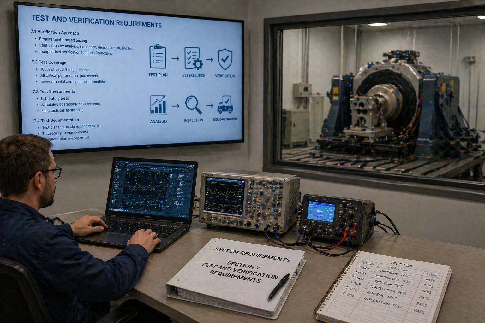
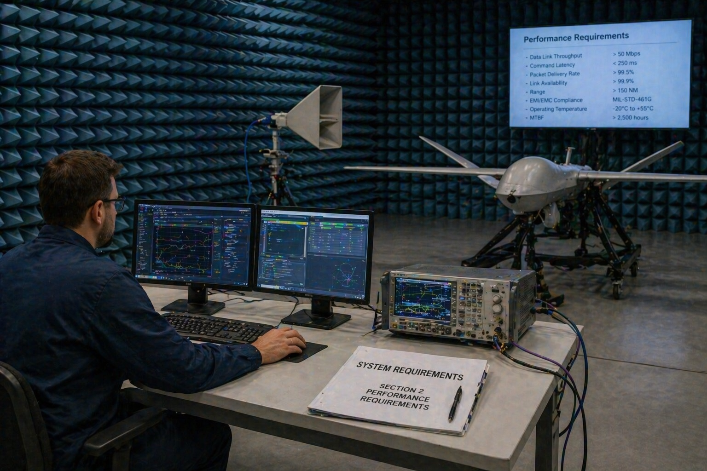

1. Purpose of Document
This document defines how SPARTA performance is controlled, how compliance with the requirements baseline (Deliverable 02) will be demonstrated, and how the architecture (Deliverable 03) will be integrated, deployed, operated, maintained, and evolved through its lifecycle. It is the realization and sustainment plan for the SPARTA baseline.
2. Scope and Applicability
The scope covers system-level performance logic, V&V planning, integration and deployment concepts, commissioning, operational support, and lifecycle considerations. Detailed test procedures and subsystem-level acceptance criteria derive from this baseline and are developed during CDR preparation.
3. Performance Objectives, KPIs & End-to-End Logic
3.1 Performance Objectives
- Provide tactically relevant trust outputs inside mission decision windows.
- Control false positives for mission-affecting recommendations.
- Maintain bounded utility in disconnected or degraded network states.
- Preserve evidence and explainability for analyst follow-up and recovery.
- Operate within contractual host-resource envelopes.
3.2 Key Performance Indicators
| KPI | Description | Objective | Threshold | Related Requirement |
|---|---|---|---|---|
| KPI-01 Trust latency | Qualified anomaly → published TrustAssessment (P95) | 2 s | 5 s | SYS-PERF-001 |
| KPI-02 Recommendation precision | Mission-affecting recommendations rated as operationally correct | ≥ 0.90 | ≥ 0.80 | Operational driver |
| KPI-03 Disconnected continuity | Sustained autonomous operation without TSOC | ≥ 24 h | ≥ 12 h | SYS-PERF-003; SYS-OPS-001 |
| KPI-04 Peer exchange burden | PeerSummary size + rate-managed bandwidth | ≤ 4 kB nominal | ≤ 8 kB hard limit | SYS-PERF-002 |
| KPI-05 Explainability completeness | Outputs carrying rationale, provenance, validity | 100% | 100% | SYS-DATA-003; SYS-HFE-002 |
| KPI-06 Host CPU share | Sustained CPU share of reference class under Monitor | ≤ 8% | ≤ 10% | SYS-PERF-004 |
| KPI-07 Memory footprint (RSS) | Steady-state Edge Agent RSS on reference class | ≤ 400 MB | ≤ 512 MB | SYS-PERF-005 |
| KPI-08 Startup to Monitor | Mission-active → Monitor state | ≤ 30 s | ≤ 60 s | SYS-RAM-004 |
| KPI-09 Adversarial resilience | Correlator output integrity under peer influence | Bounded degradation ≤ 20% | Non-catastrophic (no false majority flip) | MOE-06 |
3.3 End-to-End Performance Logic
End-to-end performance follows a sequenced pipeline: data acquisition → anomaly qualification → trust estimation → recommendation generation → MARS consumption. TSOC synchronization is strictly off-critical-path. Peer exchange is time-bounded but does not stall local trust publication; when peer data arrives after initial trust publication, an updated TrustAssessment is emitted with a revised validity window.
4. Performance Budgets, Margins and Sensitivities
4.1 Trust Decision Latency Budget
4.2 Resource Budgets per Node Class
| Resource | Embedded (SWaP) | Standard Tactical | Fog / Gateway | Margin Philosophy |
|---|---|---|---|---|
| CPU (share of reference core) | ≤ 6% | ≤ 8% | ≤ 15% | 2% margin vs SYS-PERF-004 threshold. |
| Memory RSS | ≤ 200 MB | ≤ 400 MB | ≤ 1.5 GB | ~20% margin vs SYS-PERF-005. |
| Persistent storage | ≤ 1.5 GB | ≤ 6 GB | ≤ 24 GB | Includes 24 h disconnected buffer with compression. |
| Peer summary rate | ≤ 0.2 msg/s/node | ≤ 0.5 msg/s/node | aggregation-mode | Rate-managed; priority-shed under congestion. |
4.3 Resource & Sensitivity Observations
- The dominant sensitivity is anomaly qualification quality vs false-positive control; this is the primary driver of operational acceptance (KPI-02).
- Mission-context richness (IF-EXT-01 depth) directly affects confidence and recommendation quality; reduced context => reduced confidence, preserving credibility at the cost of capability.
- Peer exchange rate must be adaptive to topology and congestion; static rates will either flood or under-inform.
- Evidence buffering converts link outage from a loss event into a delayed-delivery event; buffer depth is a direct function of node storage class.
4.4 Performance Assumptions
- Reference node class provides 2 general-purpose cores equivalent with no hardware acceleration for SPARTA.
- Peer link availability between any two nodes in a neighborhood is ≥ 60% averaged over 1-minute windows.
- Mission context updates from MARS are received at ≥ 1 Hz during active mission phases.
- Cryptographic operations for PeerSummary verification are bounded to ≤ 5 ms per summary on reference class.
5. Verification and Validation Strategy

5.1 Verification Strategy
Verification demonstrates that SPARTA satisfies the system-level requirements through Inspection, Analysis, Test, and Demonstration. Priority is given to mission-thread-based verification because many requirements depend on context-dependent trust outputs rather than simple static correctness.
5.2 Validation Strategy
Validation demonstrates that SPARTA improves mission-relevant trust awareness and bounded response support under realistic degraded and adversarial scenarios, including false-positive stress cases and disconnected operations. Validation explicitly covers MOE-01..06.
5.3 Verification Methods
| Method | Primary Use | Typical Environment |
|---|---|---|
| Inspection | Interface definitions, schema conformance, policy contracts, authority separation. | Document / code / config review. |
| Analysis | Latency / resource budgets, safety assessments, resilience arguments. | Engineering analyses, simulation. |
| Test | Functional correctness, performance, disconnected modes, message exchange, local protection. | Bench, SIL, HIL, multi-node lab. |
| Demonstration | Operational mission threads with MARS and TSOC interaction. | Digital twin, mission rehearsal, exercise environment. |
6. Requirement Verification Summary Matrix
| Requirement Cluster | IDs | Primary Method | Planned Environment | Key Evidence |
|---|---|---|---|---|
| Functional detection & classification | SYS-FUNC-001..004 | Test / Analysis | SIL + multi-node HIL | Detection rate on representative anomaly set; classification accuracy. |
| Trust estimation & explainability | SYS-FUNC-005; SYS-DATA-003; SYS-HFE-002 | Test / Inspection | SIL + ops rehearsal | TrustAssessment correctness vs ground-truth; reason-chain audit. |
| Tactical correlation | SYS-FUNC-006; SYS-IF-003; SYS-DATA-004 | Test / Analysis | Multi-node HIL with network emulation | Consensus accuracy under faulty/adversarial peers. |
| Response generation & policy | SYS-FUNC-007, 009; SYS-OPS-004; SYS-SAFE-002 | Inspection / Test | SIL + policy bench | Reversibility, expiry, policy-envelope compliance. |
| Evidence & persistence | SYS-FUNC-008; SYS-PERF-003, 006; SYS-RAM-003 | Test | Disconnected-SIL | Survival across reboots, retention bounds. |
| Performance & resource | SYS-PERF-001..007; SYS-RAM-004 | Analysis / Test | SIL + reference HIL | Latency histograms, CPU/RAM/storage envelopes, startup timing. |
| Disconnected & degraded ops | SYS-OPS-001..003; SYS-ENV-001 | Test / Demonstration | Network emulation + exercise | Mission-thread completion during TSOC loss. |
| Interface conformance | SYS-IF-001..005 | Inspection / Test | Interface bench vs reference ICDs | Schema conformance, version handling, authentication. |
| Security & provenance | SYS-SEC-001..004 | Test / Inspection | Security bench + red-team | Signature / authenticity rejection, integrity probes. |
| Safety & fail-safe | SYS-SAFE-001..003 | Analysis / Test | SIL fault injection | Fail-safe entry and behavior under forced faults. |
| Human factors & exercise | SYS-HFE-001..002; SYS-OPS-005; SYS-DATA-005 | Demonstration | Operator workshops / exercises | Interpretability scores, exercise-tag propagation. |
| RAM / lifecycle | SYS-RAM-001, 002 | Analysis / Test | Distributed HIL | Node-loss tolerance, policy/model update without redeployment. |
| Design constraints | SYS-DC-001..004 | Inspection | Design review | Authority bounds, phased deployment, content separation. |
(SYS-*)"] --> Methods["V&V Methods
(I · A · T · D)"] Methods --> Envs["Environments
Bench · SIL · HIL · Digital Twin · Exercise"] Envs --> Evid["Evidence Artefacts
Reports · Replays · Reason-chains"] Evid --> Accept["Acceptance & Baseline Release"]
7. Validation Campaigns and Acceptance Logic
7.1 Validation Campaigns
| Campaign | Objective | Representative Scenario | Pass Criteria |
|---|---|---|---|
| V1 Detection & trust generation | Confirm mission-aware detection quality. | Compromised node with local integrity and mission-inconsistency signals. | Detection recall ≥ 0.85; precision KPI-02 thresholds met. |
| V2 Tactical correlation | Confirm distributed deception detection. | Conflicting track handoffs across peer nodes; partial compromise injected. | Correlator converges on correct finding; KPI-09 bounds met. |
| V3 Disconnected operation | Confirm autonomy under TSOC loss. | TSOC reach-back lost during active mission. | Mission thread completes; evidence resynchronizes on link restore. |
| V4 Policy-controlled action | Confirm bounded, reversible local action. | Authorized Level-1 action on compromise. | Action applies, expires, and is fully auditable with reversibility record. |
| V5 Operator & analyst utility | Confirm explainability and workflow fit. | Adjudication & reintegration workshops. | Operator rating ≥ target; KPI-05 = 100%. |
| V6 Adversarial resilience | Confirm consensus / provenance robustness. | Red-team injection in peer channel. | No false consensus flip; provenance rejects invalid content. |
7.2 Acceptance Logic
Acceptance follows two gates. Technical Acceptance requires all SYS-* requirements verified (I/A/T/D) and all provisional values confirmed or documented as deferred. Operational Acceptance requires all V1..V6 validation campaigns closed with KPI thresholds met or with documented, authority-approved deviations. Acceptance artefacts include: verification matrix closure, validation campaign reports, compliance-with-policy statements, and accreditation inputs.
8. Integration, Test, Deployment and Commissioning
8.1 Integration Strategy
- Integrate edge-local functions without tactical correlation (Mode A).
- Bind MARS context and verify trust/advisory outputs on reference node class.
- Enable peer summary exchange and tactical correlation in a representative multi-node lab (Mode B).
- Integrate TSOC policy / evidence loop and verify disconnected-synchronization behavior (Mode C).
- Conduct mission-thread rehearsal with representative adversary behavior.
- Transition to operational commissioning.
(unit / SIL)"] --> B["Node HIL
reference class"] B --> C["MARS interface integration"] C --> D["Tactical multi-node HIL
+ network emulation"] D --> E["TSOC-connected
integrated rehearsal"] E --> F["Digital-twin
validation"] F --> G["Operational
commissioning"]

8.2 Deployment Concept
- Mode A: node-local sensing, trust, and evidence only. Fastest adoption, minimum interface dependency.
- Mode B: adds neighborhood-level peer summaries and tactical correlation.
- Mode C: adds full TSOC synchronization and policy-driven adaptive behavior.
8.3 Commissioning Concept
Commissioning includes configuration validation, interface-binding checks, policy load confirmation, cryptographic material verification, trust-state sanity tests, and representative mission-thread rehearsal before operational release. A Commissioning Harness (P53) produces a signed commissioning evidence package archived with the deployed system.
8.4 Test Strategy Across Levels
| Level | Primary Focus | Exit Criterion |
|---|---|---|
| Unit | Detectors, schema, crypto primitives. | Component-level tests green; coverage targets met. |
| Subsystem | Trust Engine, Response, Policy Manager, Evidence Store. | Subsystem acceptance tests closed. |
| System | End-to-end on reference HIL under nominal and degraded conditions. | All system verification lines closed with evidence. |
| Mission Validation | Mission threads with MARS/TSOC and adversary injects. | V1..V6 closed; KPI thresholds met. |
9. Operations Support, Maintenance and Training
9.0 Fleet Learning Loop
Each Eurodrone sortie closes with post-mission forensic analysis (Phase 7 in Deliv. 01 §10.1) that feeds insights back into the TSOC-owned content pipeline. This closes the loop between individual-sortie experience and fleet-wide improvement of detection content. The feedback arrow from Phase 7 to Phase 1 in Figure 01-6 is realized operationally by the pipeline below.
9.1 Maintenance and Update Concept
SPARTA maintenance distinguishes between software releases and operational content updates. Detection rules, thresholds, and policy bundles are updatable independently from core software as signed content under SYS-DC-004. Accredited software patches follow the slower, formal lifecycle with full re-verification against the controlled baseline.
9.2 Training and Support Systems
- Training covers operator interpretation of trust states, TSOC analyst adjudication workflows, and recovery/reintegration logic.
- Replay & Reason-Chain Viewer (P51) supports post-mission review and exercise debrief.
- Exercise Injector (P52) supports training without production-risk, using SYS-OPS-005 exercise mode.
- Knowledge capture feeds back into TSOC policy and detector content evolution.
10. Configuration and Change Management Principles
| Configuration Item | Baseline Authority | Change Cadence | Evidence Artefact |
|---|---|---|---|
| Accredited software baseline | Program CCB | Major / scheduled | Accreditation package, verification matrix closure |
| Interface schemas (IF-EXT-01..05) | Joint MARS/TSOC/SPARTA board | Versioned; forward-compatible preferred | ICD revision with backward-compatibility note |
| PolicyBundle / rules / models | TSOC authority | Operational (days–weeks) | Signed bundle with validity window |
| Detection content | Cyber authority via TSOC | Operational | Signed content + effectiveness telemetry |
| Identity / key material | Identity authority | Provisioning + scheduled rekey | Key custody record |
| Deployment profile (per node class) | Program integrator | Per program change | Profile with resource envelope and test evidence |
All trust outputs and evidence packages shall reference the content versions under which they were produced, enabling deterministic post-mission reconstruction and change impact analysis.
11. Lifecycle, Risks and Open Points
(Mode A → B → C)"] D --> E["Sustainment & Content Updates"] E --> F["Capability Growth /
Coalition Extension"] F -.->|"feedback"| E
11.1 Lifecycle Assumptions
- Capability maturity grows incrementally from local detection (Mode A) to full TSOC-linked operations (Mode C).
- Node classes may require tailored deployment profiles under a common external data model.
- Policy and model content evolve faster than accredited core software baselines.
- Coalition extension is a post-CDR capability layer; external data model is designed to support it.
11.2 Risks and Programmatic Sensitivities
- Program acceptance may stall if strong-action behavior is not demonstrably bounded and reversible (mitigated by SYS-SAFE-002, SYS-OPS-004, V4).
- Verification credibility depends on representative mission threads and adversary behavior models, not just unit tests (mitigated by V1..V6 campaigns on digital twin / exercise environments).
- Interface instability with MARS or TSOC products can dominate cost and schedule risk (mitigated by SYS-IF-005 schema governance and adapter pattern).
- Content pipeline (policies, models) may become a single point of operational risk if sustainment organization is under-resourced (mitigated by tooling P4 + P51 and clear TSOC authority).
- Accreditation envelope for Level-1 local protection remains TBC at PDR (flagged as open point).
11.3 Open Points for CDR Exit
- Final acceptance criteria and authority approval chain for policy-enabled local protections (UC-02, SYS-OPS-004).
- Representative digital-twin / HIL environments for validation of mission-aware anomalies.
- Classification and crypto constraints for peer summary exchange across coalition or mixed-domain operations.
- Program-specific node-class resource envelopes and per-program tailoring.
- Formal MARS / TSOC ICD freeze and ownership split.
11.4 Closure Toward CDR
This datapack establishes the PDR baseline. Closure toward CDR shall:
- Freeze IF-EXT-01 and IF-EXT-02 schemas with MARS and TSOC suppliers.
- Confirm all SYS-PERF-* provisional values on representative node classes.
- Complete V1..V3 validation campaigns on digital twin with documented results.
- Close accreditation scoping for Level-1 protective actions.
- Publish the first signed PolicyBundle v1.0 and first Detection Content v1.0 under the operational content pipeline.